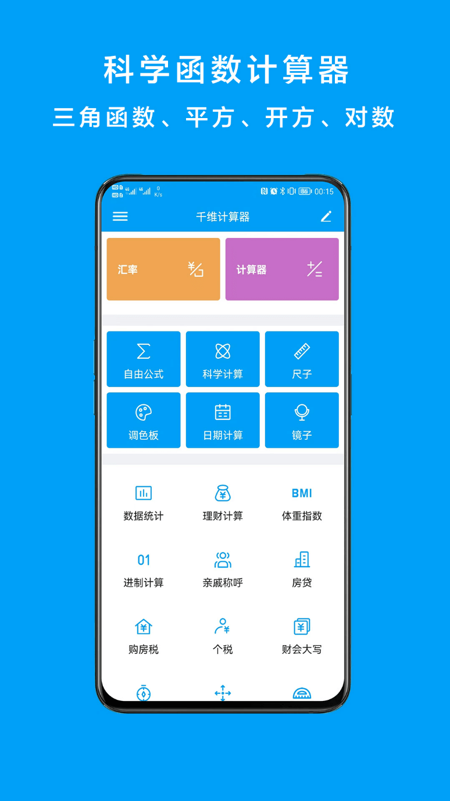
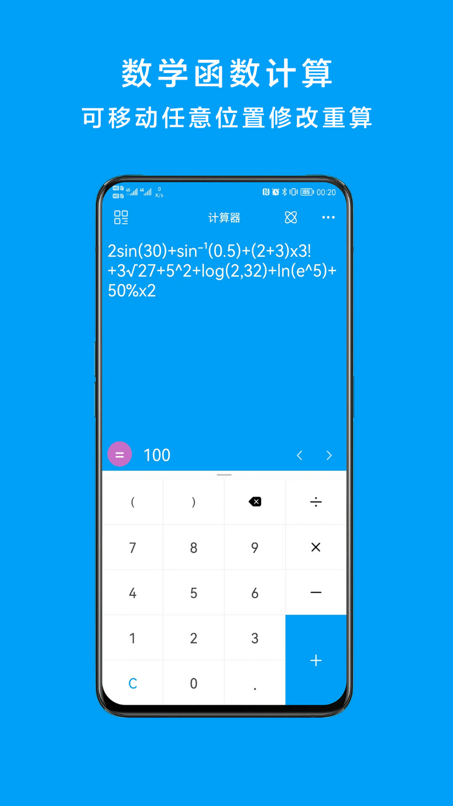
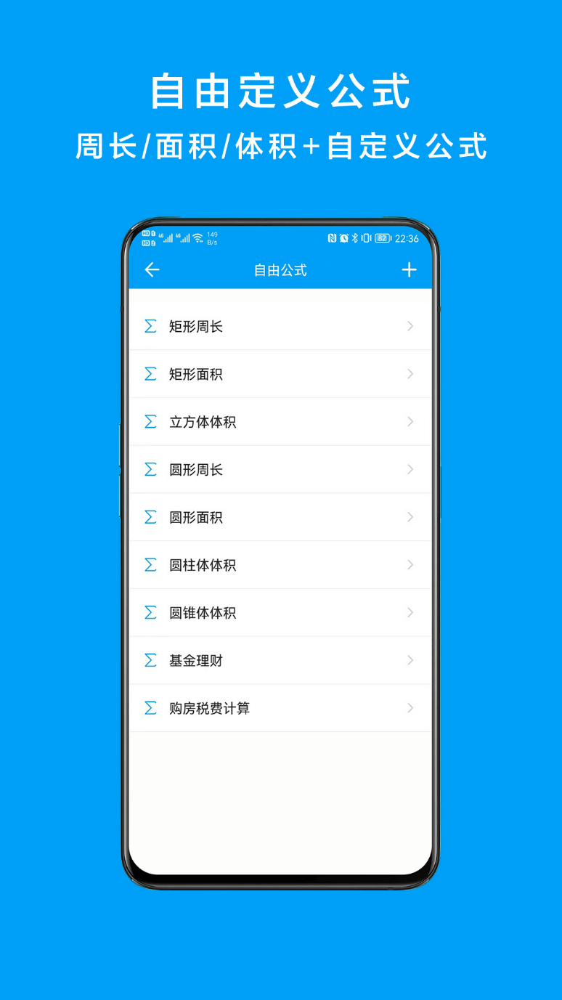
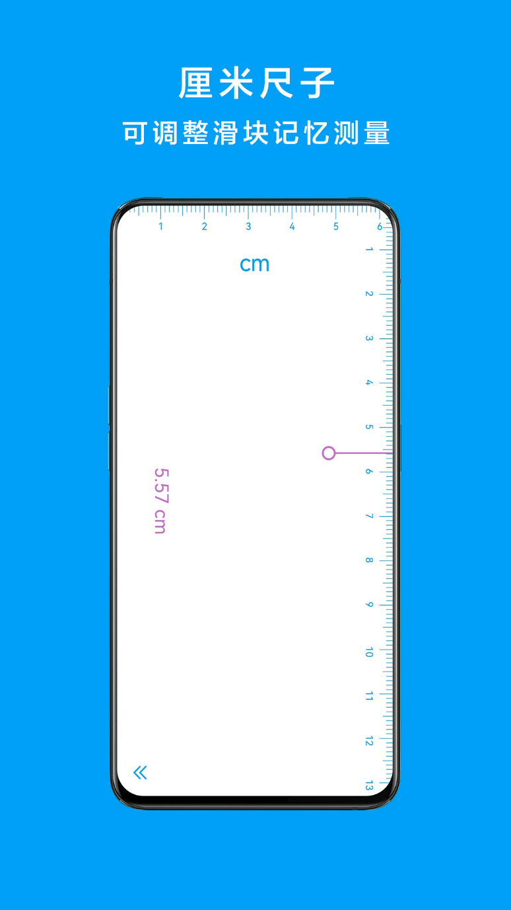
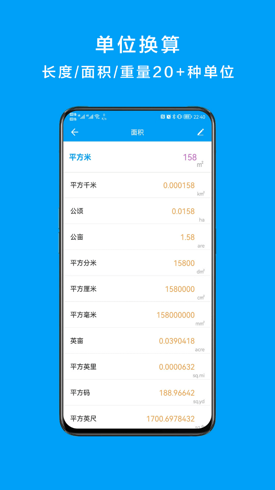

产品介绍
自然语言表达式计算器
2sin(30)+sin⁻¹(0.5)+(2+3)x3!+3√27+5^2+log(2,32)+ln(e^5)+50%x2=100
适用于生活日常、工作商务、投资理财、学习作业、物理工程等各种场景，支持数字按键语音实时播报
iOS下载
Android下载

多钟生活常用计算功能
【计算器】支持复杂的计算表达式运算、输错算式可在任意位置重新输入，支持历史记录保存，可实时恢复历史记录计算，计算结果一键拷贝

科学计算器
【科学计算器】支持校园中常见数学三角函数、幂函数、圆周率、对数函数、无理数

自由公式
【自由公式】可任意自定义计算规则公式，不仅适用于日常学习中的常见公式，尤其适用于投资理财，工程计算等多参数复杂场景

厘米尺子
【厘米尺子】口袋中的厘米尺，免去携带卷尺的便利

单位换算
【单位换算】内置20+多种常见数学单位、物理工程单位、化学单位的换算，一键换算、实时输出
主题管理
【主题管理】10+种内置主题，支持实时更换自定义主题皮肤
更多功能
【数据统计】支持实时计算数据样本的平均数、总和、方差、标准差、中位数、众数
【厘米尺子】口袋中的厘米尺，免去携带卷尺的便利
【实时汇率】支持实时查询各大银行外汇汇入、汇出价格
【亲戚称呼】支持任意辈分亲戚关系称呼查询
【理财计算】实时计算银行理财、复利理财、定投理财收益情况
【进制计算】支持36进制以内的任意进制数之间的转换
【调色板】任意拾取色彩颜色、采集图片中任意位置的颜色
...
我们的愿景
我们希望给你呈现一个简单易用、带给你生活便利的计算器
努力用心, 为您服务!您的每一个反馈与善意的指点, 都是我们进步的动力~